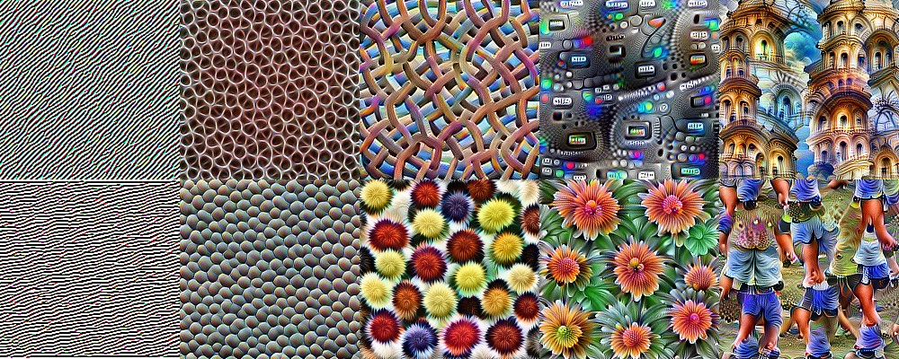
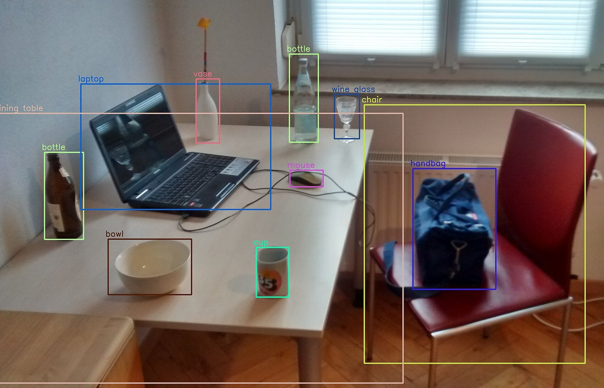
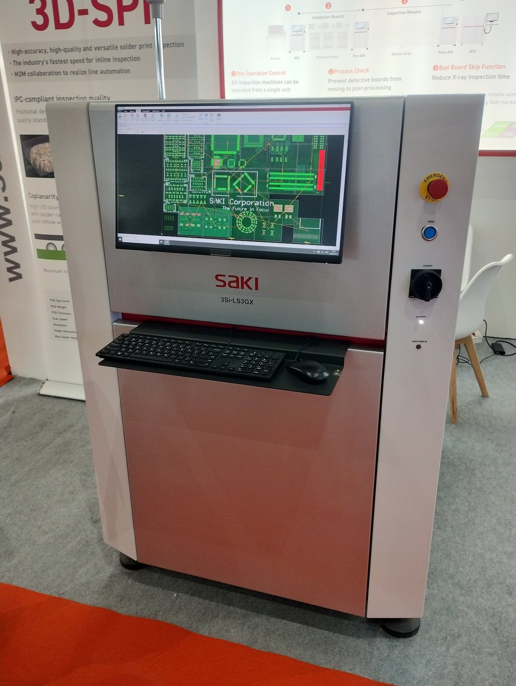

19 medidas que alguien eligió: densidad, momentos, color
Clasificador
bayesiano, SVM, red neuronal
Etiqueta
/a/, /e/, /i/, /o/, /u/
Caso 3 de la charla inicial. Imagen: Clase2.ppt, E. Cuartas Morales (2007), diap. 71.
/a/
/e/
/i/
/o/
/u/
/a/
79 %
12 %
1 %
8 %
0 %
/e/
10 %
62 %
24 %
1 %
3 %
/i/
3 %
35 %
55 %
0 %
7 %
/o/
2 %
3 %
6 %
51 %
38 %
/u/
0 %
1 %
5 %
13 %
81 %
Clasificador bayesiano: aciertos de 51 % a 81 % por vocal.
El límite del diseño a mano
Cada problema pide sus propias características
Café
color y semejanza entre vecinos
Rostros
una elipse en el espacio YCbCr
Capilares
gradientes y crecimiento de regiones
Y cada diseño depende de la iluminación con que se tomaron las imágenes.
Aprender las características
Redes convolucionales: filtros que se aprenden
Filtro de Sobel, diseñado a mano:
−1
0
1
−2
0
2
−1
0
1
Una red convolucional aprende sus filtros a partir de ejemplos: miles en cada capa.
Las primeras capas aprenden bordes; las siguientes, texturas, patrones, partes y, al final, objetos.

Capas cada vez más profundas, de izquierda a derecha. Olah et ál. (2017), «Feature Visualization», Distill, CC BY 4.0.
El cambio de época
ImageNet y AlexNet: datos y cómputo
Error top-5 del ganador del concurso ImageNet (ILSVRC), 1000 categorías. En 2012, AlexNet: una red convolucional de 60 millones de parámetros, entrenada de 5 a 6 días en dos GPU.
Modelos fundacionales visión–lenguaje
CLIP: imágenes y frases en un mismo espacio
Clasificación sin entrenamiento previo (zero-shot)
Clasificar escribiendo las etiquetas
1. Se escribe cada clase como una frase:
«una foto de una tuerca sin defectos» «una foto de una tuerca rayada» «una foto de una tuerca doblada»
2. CLIP compara la imagen con cada frase.
3. Gana la frase más parecida. Ningún ejemplo etiquetado.
En el laboratorio
Cambiar las frases cambia el clasificador: es una decisión de diseño, como el umbral del 4A.
El artículo recomienda la plantilla «A photo of a {label}.»: solo con ella, la exactitud en ImageNet sube 1,3 puntos.
Detección de objetos
Clasificar, detectar y segmentar
Detección de objetos · YOLO
YOLO: todas las cajas de una sola mirada

Salida de YOLOv3, entrenado con el conjunto COCO, en el módulo dnn de OpenCV. MTheiler, Wikimedia Commons, CC BY-SA 4.0.
YOLO (Redmon et ál., 2016): una sola red predice todas las cajas y sus clases a la vez, en tiempo real.
Viene entrenado con objetos comunes: COCO tiene 80 clases. Para piezas o defectos propios hay que ajustarlo con imágenes etiquetadas.
Versión actual: YOLO26 (Ultralytics, enero de 2026); detecta, segmenta y clasifica. Licencia AGPL-3.0.
LLMs multimodales
Preguntarle a una imagen
Imagen + instrucción
«¿La tuerca tiene algún defecto? Responde sí o no y descríbelo.»
LLM multimodal
convierte la imagen en tokens y la lee junto con el texto
Respuesta en texto
etiqueta, descripción, explicación
Flexible: la tarea se cambia con la instrucción.
Pero la propia documentación advierte que cuenta y ubica objetos de forma aproximada.
Anthropic, guía de visión de la API de Claude (consultada el 26-oct-2026).
¿Cuánto cuesta ver?
El costo por imagen
Método
Dónde corre
Tiempo o tokens
Costo
Pipeline clásico (OpenCV)
en el computador
milisegundos por imagen
sin costo por imagen
CLIP sin entrenamiento previo
en el computador (CPU o GPU)
depende del equipo; más rápido con GPU
sin costo por imagen
Detector preentrenado (YOLO)
en el computador (CPU o GPU)
milisegundos por imagen con GPU
sin costo por imagen; licencia AGPL-3.0 o empresarial
LLM multimodal · Claude Haiku 5.5
en la nube (API)
1369 tokens por imagen de 1024 × 1024
≈ US$0,14 por 1000 imágenes*
LLM multimodal · Gemini 3.1 Flash-Lite
en la nube (API)
1120 tokens por imagen
≈ US$0,28 por 1000 imágenes*
LLM multimodal · GPT-5.4 nano
en la nube (API)
1229 tokens por imagen de 1024 × 1024
≈ US$0,25 por 1000 imágenes*
* Solo los tokens de la imagen, con los precios oficiales del 26-oct-2026; la instrucción y la respuesta se cobran aparte. En Claude, una imagen cuesta ⌈ancho/28⌉ × ⌈alto/28⌉ tokens.
Contrapunto
Tres formas de resolver la misma inspección
Pipeline clásico
CLIP · YOLO preentrenado
LLM multimodal
Quién decide qué mirar
usted: umbrales, filtros, medidas
el modelo, entrenado con millones de imágenes
el modelo, guiado por la instrucción
Qué necesita
adquisición controlada
frases (CLIP) o un modelo para sus clases (YOLO)
una buena instrucción y conexión
Cómo se equivoca
cuando cambia la luz o el fondo
con clases raras o mal descritas
cuenta y ubica de forma aproximada; puede inventar
Cómo se explica
cada paso se ve y se mide
similitud o caja con su confianza
con texto, que hay que verificar
Cuándo basta lo clásico
Si se controla la adquisición, lo sencillo funciona
Fondo, luz y distancia fijos: un umbral separa la pieza.
Pocas clases bien definidas: unas medidas bastan.
Hay que explicar cada rechazo: cada paso se puede auditar.
Caso 3, conclusión
«se puede trabajar con un clasificador más sencillo como el Bayesiano para separar los 5 fonemas vocales».

Inspección óptica automática (AOI) de placas electrónicas: la cámara y la luz van dentro de la máquina. Gpkp, Electronica India 2025, Wikimedia Commons, CC BY-SA 4.0.
Síntesis
Lo que nos llevamos
Diseñar
el pipeline clásico: control y explicación, si la adquisición es estable
Aprender
las redes aprenden sus filtros: datos y cómputo
Describir
CLIP clasifica con frases; YOLO detecta y cuenta
Preguntar
un LLM multimodal es flexible, cobra por imagen y hay que verificarlo
A continuación · 60 min
Laboratorio 4B · Reconocimiento con modelos preentrenados
Las mismas imágenes de inspección industrial, con modelos que ya saben ver: CLIP sin entrenamiento previo, un LLM multimodal y un detector preentrenado.
Comparar
con la matriz de confusión y el costo por imagen
Analizar
los errores: ¿cuándo basta el pipeline del 4A?
Sin escribir código
notebook de configuración, en parejas
Referencias de la charla intermedia
Para profundizar
Deng, J. et ál. (2009). ImageNet: a large-scale hierarchical image database. CVPR 2009, 248–255. PDF
Russakovsky, O. et ál. (2015). ImageNet Large Scale Visual Recognition Challenge. IJCV 115(3), 211–252. DOI · arXiv
Krizhevsky, A., Sutskever, I. y Hinton, G. E. (2012). ImageNet classification with deep convolutional neural networks. NIPS 2012. PDF
Zeiler, M. D. y Fergus, R. (2014). Visualizing and understanding convolutional networks. ECCV 2014, 818–833. arXiv
Olah, C., Mordvintsev, A. y Schubert, L. (2017). Feature visualization. Distill. distill.pub
Radford, A. et ál. (2021). Learning transferable visual models from natural language supervision. ICML 2021, PMLR 139, 8748–8763. PMLR
Redmon, J., Divvala, S., Girshick, R. y Farhadi, A. (2016). You Only Look Once: unified, real-time object detection. CVPR 2016, 779–788. arXiv · Ultralytics (2026). YOLO26 · licencias
Salazar, A. y Prieto, F. (2006). Extracción y clasificación de posturas labiales en niños entre 5 y 10 años de la ciudad de Manizales. DYNA 73(150), 175–188. Artículo


_37.jpg){kind=link}